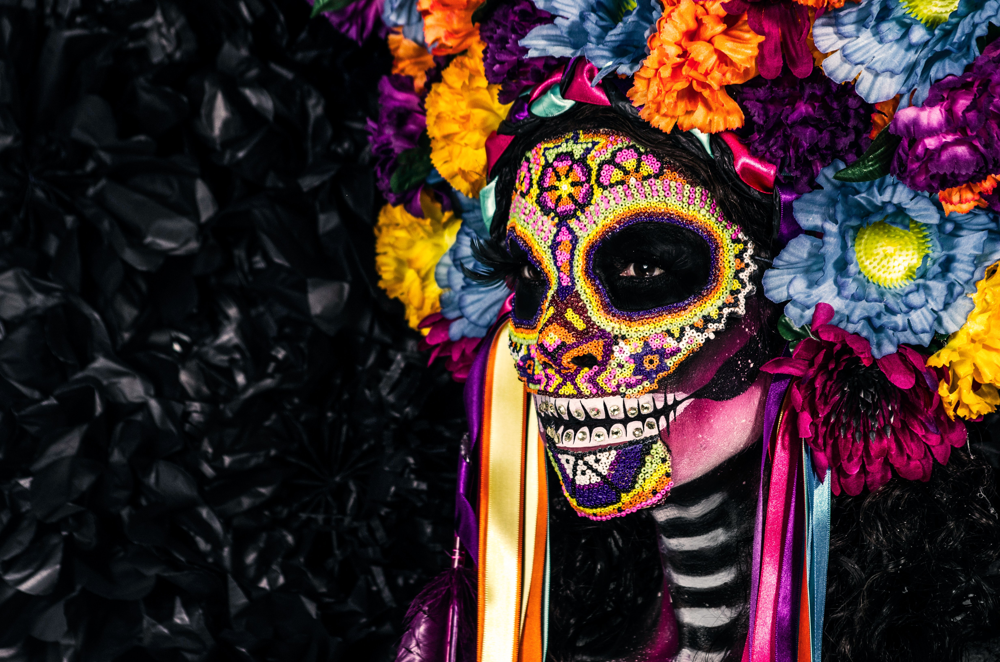

Le Mexique est la scène des vestiges de deux des plus prestigieuses civilisations éteintes ayant peuplés la terre pendant notre ère. Dans le sud du pays, les mayas, un peuple dont la plupart des mystères ne sont aujourd’hui toujours pas vraiment élucidés. Ils étaient extrêmement avancés dans les domaines de l’astronomie, de l’écriture, de l’art et de l’agriculture. Dans le centre du pays, les aztèques, un peuple guerrier qui imposa sa force et sa puissance durant plusieurs siècles dans cette vaste région des caraïbes au pacifique. Ces civilisations ont laissées un véritable témoignage de l’Histoire à travers des cités aujourd’hui déterrés, nettoyés, reconstruites et étudiés. Ces sites font incontestablement partie des lieux immanquables lors de votre séjour au Mexique.
Mexique
Villes incontournables
Mexico City
Mexico city ne s’aborde facilement. Parmi les plus grandes métropoles du monde, la capitale du Mexique intimide dès qu’on met les pieds dans son aéroport bondé.
Vaste, peuplée, polluée… On utilise souvent ces adjectifs pour la décrire. Avec les mésaventures qui m’y sont arrivées, comme attraper l’E.Coli et me faire voler ma caméra, je serais bien mal placé pour en faire un portrait tout rose. Par contre, la décrire comme un endroit terrible serait tout aussi faux.
Troisième plus grande place au monde dans l’une des plus grandes villes du monde avec le plus grand drapeau que j’ai personnellement vu au monde, la Plaza de la Constitucion est impossible à manquer.
Il faut y aller, ne serait-ce que pour passer à travers en route vers le Bellas Artes ou le Palacio Nacional.
Personnellement, j’aime beaucoup les musées d’art alors ça a été un vrai plaisir de voir les œuvres de Siqueiros, d’Orozco et de Rivera au Bellas Artes.
Pour prendre la photo du Bellas Artes vu de haut, il faut visiter la Torre Latinoamerica, d’où l’on a une vue panoramique de la capitale. Elle s’étend à perte de vue et même si je m’en doutais déjà, c’est là que j’ai réalisé que jamais je ne pourrais explorer l’entièreté de Mexico City.
Sans être un incontournable, le Museo Postal mérite d’être visité rapidement pour l’architecture du bâtiment. Même chose pour la Cathédrale métropolitaine.
Oaxaca

Sommets hauts de plus de 3000m, cavernes parmi les plus profondes au monde, plages vierges, jungles cachées, vallées abritant des villages à la culture ancestrale… Alors une visite de Oaxaca s’impose !
Oaxaca est digne d’intérêt pour diverses raisons ! Parmi elles : ses riches traditions artisanales, festives et gastronomiques indiennes. Son architecture coloniale vaut également le voyage. Et l’ancien collège de San Ildefonso, qui est aujourd’hui devenu un musée, en est la preuve ! Le territoire de Oaxaca est aussi merveilleusement bien adapté à la randonnée, que ce soit à pied, à cheval ou à vélo ! Et n’oublions pas qu’au nord se trouve la Sierra Norte, chaîne montagneuse grandiose…
La ville de Oaxaca est riche d’histoire, de traditions indigènes ancrées et haut-lieu de la culture mexicaine, Oaxaca mérite d’y passer du temps ! Elle est d’ailleurs inscrite au patrimoine mondial de l’UNESCO depuis 1987. Le centre historique de Oaxaca doit ce titre à toutes ses églises et places, galeries d’art, musées et espaces verts. Le zócalo est le cœur de la ville, c’est là où se trouve la cathédrale notamment. L’atmosphère qui y règne est agréable, notamment grâce à ses rues paisibles et colorées. Il s’agit d’une des villes les plus sûres du Mexique. Ceci dit, son charme n’empêche pas l’émergence de revendications qui s’inscrivent par exemple dans les rues avec le street art. Et c’est cela qui rend Oaxaca si complexe et intéressante !
Saisissez l’occasion d’aller voir l’ancien collège de San Ildefonso, le Templo Mayor, de goûter à la gastronomie mexicaine… En partant avec Pachamama Voyages, vous pourrez aussi rencontrer la communauté Latuvi qui vit dans la Sierra Norte de Oaxaca ! Nous vous emmenons hors des sentiers battus dans les états de Mexico, d’Oaxaca et de Puebla. Des pyramides aztèques aux temples mayas, du Mexique précolombien au Mexique moderne, de Frida Kahlo à Diego Rivera, des villages mexicains aux gratte-ciels futuristes du Paseo de la Reforma, vous découvrirez la culture populaire contemporaine, l’architecture, l’artisanat indien haut en couleur mais aussi le street art dans les rues de Mexico…
Tulum
Fermez les yeux.
Prenez une grande respiration.
Imaginez une plage de sable blanc. Une mer turquoise. Des huttes de luxe. Des ruines mayas. Du yoga sous les palmiers. Des restos dignes de New York. Deux-trois vedettes d’Hollywood... et la moitié des influenceurs de votre fil Instagram.
Ouvrez les yeux.
Vous voici à Tulum, la destination la plus en vogue de la péninsule du Yucatan!
Bordée par la mer des Caraïbes et connue pour son magnifique site archéologique, Tulum est située à un peu moins de 2h de route de Cancún, au Mexique.
On dit qu’au cours des 10 ou 15 dernières années, elle est passée d’une petite agglomération hippie difficile d’accès à un véritable repaire pour foodies, hipsters et fashionistas!
Ce qui fait courir les voyageurs? Les petits hôtels boutiques écolos sur la plage, la qualité des restaurants (le chef du Noma lui-même y a ouvert un pop-up l’an dernier), les offres de yoga et de soins divers, ainsi que la sublime nature environnante.
Lieux Emblématiques

Quintana Roo
Immense plateau calcaire débordant sur la mer des Caraïbes, le Quintana Roo et la Riviera Maya offre à ses visiteurs ses charmes multiples. Des paysages de rêve où se côtoient plages de sable fin, droites et longilignes à souhait, et eaux turquoise.
L’état du Quintana Roo est bordé de mangroves et de délicieuses plages de sable blanc caressées par une mer turquoise. Sous ses flots, un joyau : le Parc national marin de Sian Ka’an, à la frontière du Belize, qui recèle les plus beaux fonds coralliens des Caraïbes.
Mais la côte entre Cancun et Tulum a vu se développer des stations balnéaires comme des champignons. A ceux que la standardisation américaine de la côte ferait peur, il suffit de se réfugier sur la petite île qui se profile au large de Cancun : Isla Mujeres.
Les plages bordées d’aréquiers et cernées de récifs de coraux (notamment la playa Rancheros, réserve naturelle de tortue, et la playa El Garrafon, parc national sous marin), la forêt tropicale qui couvre le centre de l’île et qui abrite des ruines de temples mayas, justifient le charme discret, naturel et préservé de cette île des femmes.
Zipolite
Toute la beauté de Zipolite réside dans le fait d’y aller pour ne rien faire. Prenez une corona, mettez les pieds dans le sable et chill. Et c’est comme ça que vous rencontrerez des voyageurs qui y restent coincés des semaines, voire des mois.
Au bout de la plage, vous pouvez visiter la Playa del Amor en montant quelques marches. En revenant vous pouvez vous arrêter goûter le poisson de Sal y pimiento. Le soir, déambulez sur la rue principale et mangez quelques quesadillas au Delfino ou chez Nicole. Quand le coeur y est, le bar appelé le cinéma organise des soirées karaoké tous les vendredis.

Teotihuacan
Cité sainte située à une cinquantaine de kilomètres de Mexico, édifiée entre le Ier et le VIIe siècle, Teotihuacan, « lieu où sont créés les dieux », se caractérise par les très grandes dimensions de ses monuments dont les plus célèbres sont le temple de Quetzalcoatl et les pyramides du Soleil et de la Lune, et par leur ordonnance géométrique et symbolique. Teotihuacan, l'un des plus puissants foyers culturels méso-américains, imposa son élan culturel et artistique dans toute la région, et même au-delà de ses frontières.
Agua azule - Chiapas
Dans les envions de Palenque, Agua Azul forme une magnifique suite de cascades qui se déversent dans des vasques successives. Les eaux sont d'un bleu turquoise lumineux. Attention, d'août à novembre, les eaux sont boueuses.
Grille tarifaire de notre partenaire
| Services | Formule Basique | Formule Privilège | Formule Premium |
|---|---|---|---|
| 2 semaines en hostel | Oui | Oui | Oui |
| Petit déjeuner | Oui | Oui | Oui |
| Pension complète | Oui | Oui | Oui |
| Vol inclus | Non | Oui | Oui |
| Accès illimité au SPA privé | Non | Non | Oui |
| 5h de plongée OFFFERTE | Non | Non | Oui |
| Tarif TTC | 659,00€ | 989,00€ | 1 100,00€ |